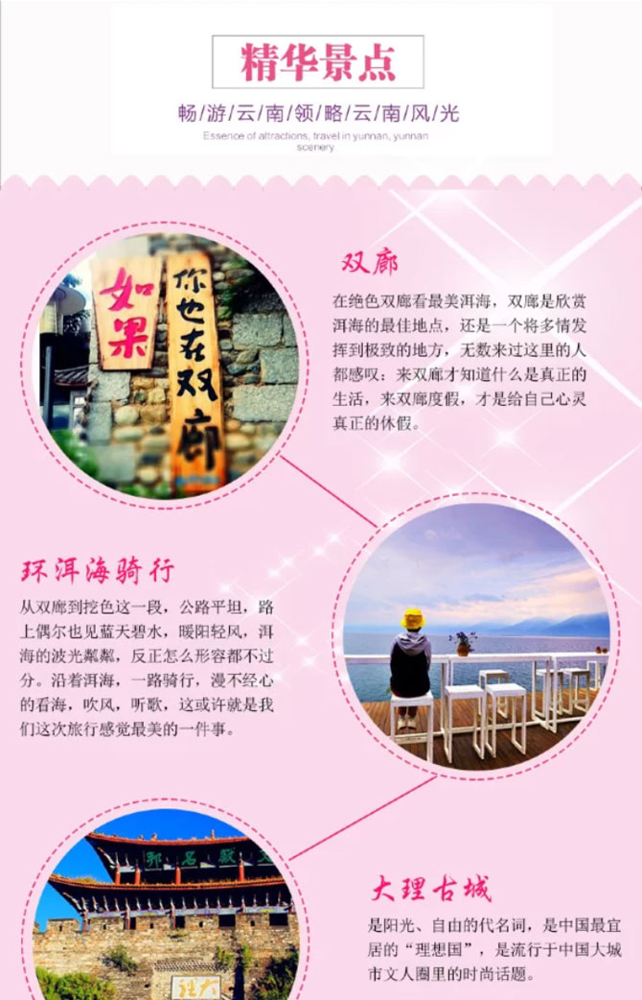
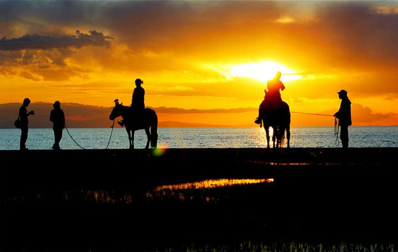
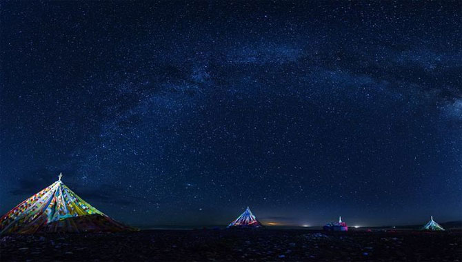

产品编号：02663
2016【丝绸之路经典游】领袖户外独家水上魔鬼城-青湖-祁连山-敦煌-张掖-茶卡盐湖九日深度游-M
选择：出发日期和人数
线路特色
行程介绍
各地团友全天在甘肃省会兰州报道。黄河穿城而过形成了独特而美丽的城市景观。早到的团友，先吃一碗热气腾腾的兰州拉面，再游览黄河第一桥——中山桥、黄河母亲雕像，或者到水车博览园参观中国最古老的灌溉工具——水车，累了坐在黄河边喝杯三炮台。晚上可前往赫赫有名的小吃街正宁路夜市，品尝有名的老马家牛奶鸡蛋醪糟，以及各种特色小吃。
各地团友全天在甘肃省会兰州报道。黄河穿城而过形成了独特而美丽的城市景观。早到的团友，先吃一碗热气腾腾的兰州拉面，再游览黄河第一桥——中山桥、黄河母亲雕像。
各地团友全天在甘肃省会兰州报道。黄河穿城而过形成了独特而美丽的城市景观。早到的团友，先吃一碗热气腾腾的兰州拉面，再游览黄河第一桥——中山桥、黄河母亲雕像。。
各地团友全天在甘肃省会兰州报道。黄河穿城而过形成了独特而美丽的城市景观。早到的团友，先吃一碗热气腾腾的兰州拉面，再游览黄河第一桥——中山桥、黄河母亲雕像，或者到水车博览园参观中国最古老的灌溉工具——水车，累了坐在黄河边喝杯三炮台。晚上可前往赫赫有名的小吃街正宁路夜市，品尝有名的老马家牛奶鸡蛋醪糟，以及各种特色小吃。
预定须知
【费用包含】
1、行程包车费用：全程空调旅游车
2、门票：青石嘴观花台、卓尔山、情人湖、张掖丹霞地貌、嘉峪关、鸣沙山月牙泉、莫高窟、茶卡盐湖（如持有军官证、学生证、教师证、老年证等免票证件者，请在领队买票之前出示，我们会现场退还相应费用）
3、住宿：8晚标准间
第一晚：兰州挂三星酒店标间
第二晚：黑马河边藏家客栈标间
第三晚：德令哈高档型酒店标间
第四晚：大柴旦挂三星酒店标间
第五晚：敦煌舒适型酒店标间
第六晚：嘉峪关舒适型酒店标间
第七晚：张掖景区门口舒适型酒店标间
第八晚：祁连县挂三星酒店标间
备注：舒适型酒店类似准三星酒店 高档型酒店类似准四星酒店
4、全程7早餐（黑马河不含早）
5、领队服务
【费用不含】
1、全程不含在内其余餐费(AA制，约500元)；
2、路程中自己消费（购买明信片、与少数民族合影）
3、沿途娱乐费用
4、单房差说明：全程入住标间（一个房间2个床位，行程中标注多人间的除外），单人报名的，我们会安排同性拼住，如不愿拼房的，请补齐单房差以享用整个房间，携带异性儿童者，建议补单房差享用整个房间，全程单房差1400元。拼住不成的，单房差由领袖户外承担，请单男/单女放心报名！
5、景区交通：卓尔山小火车10元（可徒步可坐车），张掖丹霞电瓶车20（必须），茶卡盐湖景交车10元、小火车50（可徒步可坐车）、青石嘴观景台景区小火车30元/趟(可徒步可坐车)，其他景交（因当地政策或村民临时收费等原因所引致的额外费用。）
6、景点：阿柔大寺30元，塔尔寺80元、其他门票（因当地政策或村民临时收费等原因所引致的额外费用）
7、【费用包含】中未含的其他费用
支付方式
1、行程包车费用：全程空调旅游车
2、门票：青石嘴观花台、卓尔山、情人湖、张掖丹霞地貌、嘉峪关、鸣沙山月牙泉、莫高窟、茶卡盐湖（如持有军官证、学生证、教师证、老年证等免票证件者，请在领队买票之前出示，我们会现场退还相应费用）
3、住宿：8晚标准间
第一晚：兰州挂三星酒店标间
第二晚：黑马河边藏家客栈标间
领袖户外的活动不同于传统旅游活动
我们沿着风光宜人的湖边公路前行。
